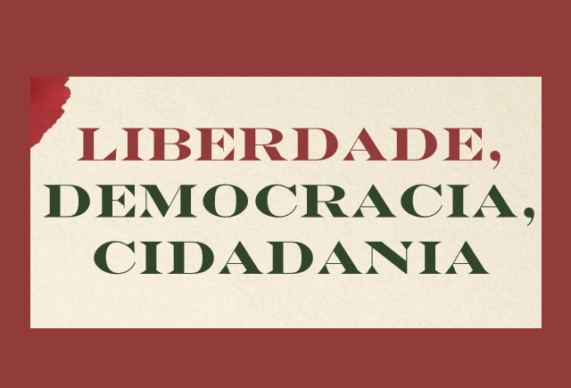
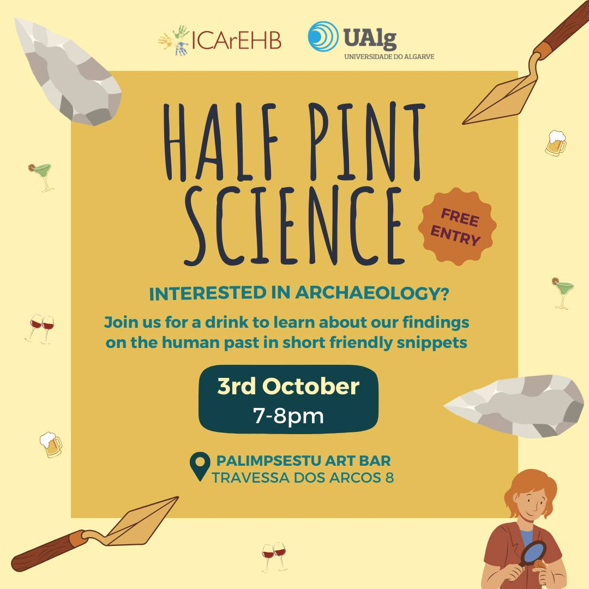
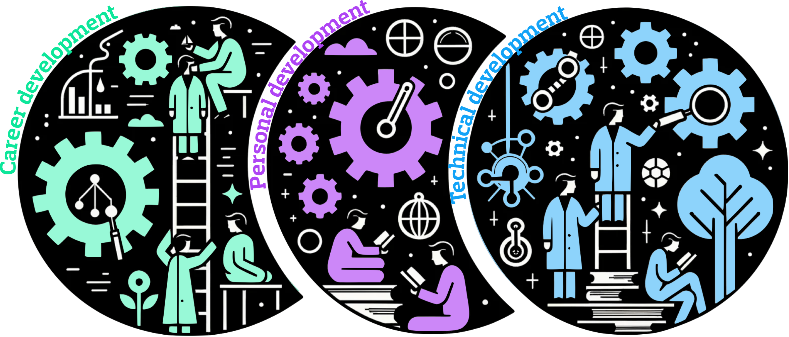

UAlg Science Community
Home
News
Calendar
About
Documents
Meeting with Deputy Cristóvão Norte
DL57
Peace promotion at UAlg
STELLAR | Proposal
AI usage in Research | EU guidelines
FCT Tenure
CRUP Proposal
Extra
UAlg
News

Liberdade, Democracia, Cidadania | Ciclo de Conversas
Conversa 3 | 07 November 2024 at 16:00h | Online
Sílvia Leiria Viegas
Oct 8, 2024

Half Pint Science
ICArEHB | 03 October 2024 at 19:00h
ICArEHB
Oct 3, 2024
NEI2024 Protest Faro
Protest to End Job Insecurity in Science | 27 September 2024 at 19:00h
Isabel Duarte, Patrícia Pinto, Bárbara Horta e Costa, Mafalda Rangel
Sep 27, 2024
Meeting Policy Makers
Meeting with Algarve Parlamentary Representative Cristóvão Norte | 23 September 2024 at 10:00h
Patrícia Pinto, Bárbara Horta e Costa, Mafalda Rangel, Isabel Duarte
Sep 23, 2024
AI in Pedagogical Innovation | AI Empowered Research
4th Meeting | 19 June 2024 at 14:00h
Isabel Duarte
Jun 4, 2024
Liberdade, Democracia, Cidadania | Ciclo de Conversas
Conversa 2 | 19 June 2024 at 16:00h | Online
Sílvia Leiria Viegas
Jun 4, 2024
Mental Health | Shall we talk about it?
How to improve our mental health | 22 May 2024 at 11:00h
Carolin Correia Hoffmann, Cláudia Costa, Isabel Duarte
May 4, 2024
PicNic 4 Peace
Peaceful gathering to support world PEACE | 10 May 2024 at 17:00h
João Correia
May 2, 2024
Jingle Bells & Lab Coats
Christmas Snacktime Invitation
Isabel Duarte
Nov 18, 2023

STELLAR | Promoting Excellence at UAlg
Our proposal to the Orçamento Participativo UAlg 2023
Isabel Duarte
Oct 31, 2023
No matching items
Back to top